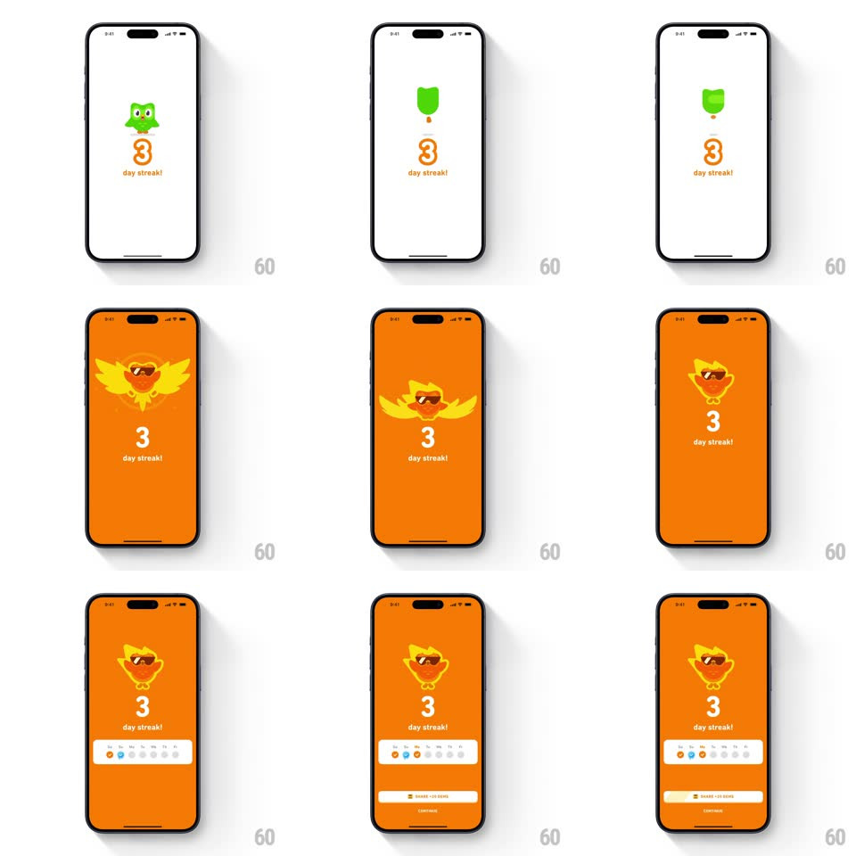

Media
Frame-by-frame

Rebuild this interaction 1:1: Duolingo's 3-day streak celebration - Duo the owl appears above a bouncing orange "3", gets sucked into a transformation, and the whole screen floods orange as Duo re-emerges as a flaming phoenix with sunglasses, wings spread, over "3 day streak!", followed by the week strip and share button rising in.

Rebuild this interaction 1:1: Duolingo's 3-day streak celebration - Duo the owl appears above a bouncing orange "3", gets sucked into a transformation, and the whole screen floods orange as Duo re-emerges as a flaming phoenix with sunglasses, wings spread, over "3 day streak!", followed by the week strip and share button rising in. ## Integration Integration: stack-agnostic spec - springs given as stiffness/damping, timed motions as duration + curve; map every value to your framework and animation library of choice. ## Scene White screen that floods orange. Cast: Duo (green owl) over the digit "3" and "day streak!" label; transformed Duo (orange phoenix with shades, wing-flame silhouette); week strip and "SHARE TO STORY" button below. ## Motion spec Pattern: mascot metamorphosis with background flood. - Duo bounces in above the digit (spring ~340/18, 400ms); the "3" rolls in with its own bounce (spring ~320/18, staggered 150ms); "day streak!" fades in. - Transformation: Duo compresses (squash 0.8, 150ms) and rockets upward off-screen; a radial orange flood wipes the background from center (circle expand, ~500ms). - Phoenix Duo slams back in from above (spring ~280/16, big overshoot, 450ms) with wings spread; the digit and label return tinted white-on-orange. - Week strip slides up with the third dot popping (scale 0 -> 1.3 -> 1, 300ms); the share button and a secondary button rise last (spring ~340/22). - Idle: phoenix wings flap subtly (rotate +/-4deg, 900ms loop). ## Calibration - The background flood originates from Duo's exit point - the mascot causes the color change. - White text on orange for the transformed state; keep the digit huge. ## Reduced motion Duo crossfades to phoenix; background fades to orange (300ms); UI fades in staggered. ## Don't miss - The phoenix wears sunglasses - it is a character beat, not a plain flame. - The transformation has exactly one exit and one re-entry - no intermediate morph frames.